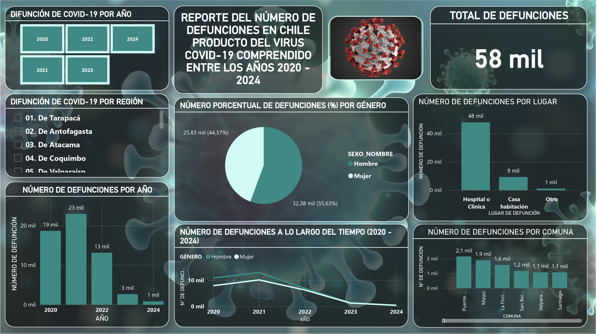

Análisis estadístico: Defunciones por Covid-19 en Chile
Se presenta un análisis estadístico de las defunciones atribuibles a COVID-19 en Chile durante el período 2020-2024 a través del uso de técnicas de análisis exploratorio y comprender los patrones de mortalidad del SARS-COV2.
1. Introducción
La pandemia de COVID-19 ha tenido un impacto significativo en la salud pública a nivel mundial, y Chile no fue la excepción. Abordaremos el tema mediante el uso de herramientas de visualización de datos y la aplicación de técnicas de análisis exploratorios...
2. Metodología
2.1 Fuentes de datos
El análisis se basa en un conjunto de datos en formatos .CSV que contiene información sobre las defunciones que están relacionadas con el COVID-19 en Chile obtenida del sitio web "datos.gob", la cual es una página oficial del gobierno de Chile la que puede hacerse con estos datos dándole click aquí. Las variables claves (extraídas del conjunto de datos antes mencionadas) para llevar a cabo este análisis son:
- Sexo y Edad del fallecido.
- Comuna y Región de residencia.
- Lugar del fallecimiento.
- Causa principal de muerte, especificada según los códigos diagnósticos: U07.1, U07.2 y U099 (detallaremos este punto más adelante en la Tabla 2).
2.2 Transformación de los datos
En el conjunto de datos original, no se disponía de una columna específica que resumiera el número total de defunciones por COVID-19. Para abordar esto, se calculó el total de muertes a partir de las observaciones individuales, agrupando los registros por las variables relevantes (por ejemplo, año, región, o comuna) uti- lizando Python. Este cálculo se realizó con la utilización de la librería Pandas, la que permitió generar una nueva columna con la suma o total de defunciones para su posterior análisis.
A la base de datos original, obtenida del sitio antes mencionada, se le aplicó trata- mientos a los datos, en donde hubo limpiezas como el cambio de nombres en algunas variables para estandarizar las categorías y evitar así palabras o nombres de estas mismas que puedan si bien apuntar al mismo objetivo pero por error de escritura se diferencien y que este se vea reflejado en el análisis lo que pueda provocar sesgos en los resultados finales y, consigo, tomar decisiones erráticas.
2.3 Transformación de Variables
Para mejorar la representación y análisis de algunas variables (por ejemplo, el núme- ro total de defunciones), se aplicó una transformación logarítmica. Esta transforma- ción ayuda a reducir la asimetría de los datos, mitigar el efecto de valores extremos y facilitar la interpretación de los vínculos entre variables al convertir relaciones multiplicativas en aditivas.
En este análisis los rangos de edad para clasificar los grupos etarios que repre- sentan a los pacientes son los siguientes:
| Grupo Etario | Rango Edad |
|---|---|
| 1. Niños y Adolescentes | 0 - 17 años |
| 2. Jóvenes | 18 - 29 años |
| 3. Adultos Jóvenes | 30 - 44 años |
| 4. Adultos de Mediana Edad | 45 - 59 años |
| 5. Tercera edad | 60 - 79 años |
| 6. Cuarta Edad | 80 + años |
A continuación, daremos una breve explicación de las tres categorías principales que se emplean según la clasificación internacional:
| Tipo de defunción | Definición |
|---|---|
| 1. U07.1 | Defunciones confirmados por caso COVID-19. |
| 2. U07.2 | Defunciones sospechosas sin confirmación de laboratorio. |
| 3. U099 | Muertes por causas inespecíficas relacionadas. |
2.4 Selección de Datos
Para este análisis, hemos considerado las muertes por COVID-19 en pacientes con edades comprendidas entre 0 (meses para recién nacidos) y 103 años. La deci- sión de excluir a los pacientes mayores de 103 años se fundamenta en dos razones principales:
- Razonabilidad en la distribución etaria: Las muertes por COVID-19 en pacientes de más de 103 años son extremadamente raras y, en muchos casos, es probable que estas cifras estén influidas por errores en los registros de edad. Además, la mortalidad por SARS-COV2 se encuentra significativamente elevada en los pacientes de tercera edad (60-80 años) y en la cuarta edad (81-103 años), lo que hace que el análisis centrado en estos rangos de edad sea más relevante para inferir la susceptabiidad de los grupos vulnerables.
- Enfoque práctico y relevante para la población de alto riesgo: El foco principal del estudio es entender la mayor vulnerabilidad de los pacientes de tercera y cuarta edad frente al virus. Aquellos mayores de 100 años son generalmente más frágiles, pero su número es limitado, y su análisis no cambia sustancialmente las conclusiones que se pueden extraer del análisis de mortabilidad en los grupos etarios más representativos.
El tamaño total de pacientes en estudio originalmente es de 58.215, sin embargo, aplicando el filtro (explicado a principio de esta sección) se acota a 58.162 los que serán considerados para este análisis, lo que equivale al 99.9% del total.
2.5 Herramientas
El procesamiento y análisis de los datos se realizaron con Python, utilizando principalmente el entorno de desarrollo integrado (IDE) Spyder. Además, se em- plearon librerías como:
- Pandas y Numpy: para el manejo y transformación de los datos.
- Matplotlib y Seaborn: para visualización de datos.
2.6 Técnicas usadas
- Análisis Exploratorio de Datos (EDA) y Segmentación regional y por Edad: Para identificar patrones, valores atípicos y características principales del conjunto de datos y para evaluar variaciones en la mortalidad según región, grupo etario y sexo. Los gráficos utilizados son:
- a) Gráfico de líneas continuas.
- b) Histogramas.
- c) Gráfico de barras (vertical y horizontal).
- d) Gráfico de barras agrupadas en categorías.
3. Resultados
3.1 Tendencia de las defunciones por COVID-19 en Chile desde el año 2020 hasta 2024
En la Figura 1, se observa los elevados números de muertes a inicios de la pandemia por SARS-COV2 a nivel nacional llegando a superar los 6.000 casos en el primer año. Luego, transcurre el tiempo (los años), vemos que va decayendo las pronunciaciones o picos. Estos se puedan justificar por nuevas variantes que surgieron en esos años e hicieron que aumentaran nuevos casos. Pero en términos generales, vemos que la serie presenta una tendencia negativa, vale decir, que va decayendo con el tiempo, esto puede deberse a los medidas efectivas como el confinamiento, las vacunas y, sus números de dosis que se inocularon a la población de manera paulatina.
| Región | Número de muertes | % Acumulado |
|---|---|---|
| Metropolitana de Santiago | 27.964 | 48,1% |
| De Valparaíso | 5.926 | 10,2% |
| Del Biobío | 4.319 | 7,4% |
| Del Maule | 2.997 | 5,1% |
| Del Libertador B. O'Higgins | 2.593 | 4,5% |
| De La Araucanía | 2.522 | 4,3% |
| De Los Lagos | 2.292 | 3,9% |
| De Coquimbo | 1.869 | 3,2% |
| De Antofagasta | 1.776 | 3,1% |
| De Los Ríos | 1.267 | 2,2% |
| De Ñuble | 1.224 | 2,1% |
| De Tarapacá | 1.100 | 1,9% |
| De Arica y Parinacota | 804 | 1,4% |
| De Atacama | 655 | 1,1% |
| De Magallanes y de La Antártica Chilena | 647 | 1,1% |
| De Aisén del Gral. C. Ibañez del Campo | 207 | 0,4% |
En la Figura 2 y el Cuadro 3 muestran el porcentaje (%) acumulado de muertes por COVID-19 a nivel regional en Chile, destacando la concentración desigual de los fallecimientos a lo largo del país.
Distribución por regiones:
- Región Metropolitana: Lidera con un abrumador 48.1% de las muertes acumuladas, llegando casi a la mitad de las defunciones totales del país. Este alto porcentaje refleja a su elevada densidad poblacional, urbanización y movilidad, factores que facilitan una rápida propagación del virus.
- Regiones de Valparaíso y Biobío:Ocupan el segundo (10.2 %) y el tercer lugar (7.4 %), respectivamente. Ambas regiones tienen una alta poblacíon urbana y también actúan como puntos de conexión con otras áreas del país.
- Regiones Intermedias (Maule, O’Higgins, Araucanía, etc.):Con porcentajes entre 4 % y el 5 %, estas regiones muestran un impacto más moderado, esto osiblemente sea debido a poblaciones menos densas o medidas de contención más efectivas.
- Regiones extremas del norte y sur: con menor porcentaje %.
- a) Magallanes y Aiséncon 1.1 % y 0.4 %, respectivamente, lo que puede explicarse a sus bajas densidades poblaciones y aislamiento geográfico.
- b) Arica y Parinacota, Atacama y Tarapacá: Estos valores más bajos reflejan menos presión en los sistemas de salud y, una posible menor incidencia de casos graves debido a características demográficas específicas.
Factores que podrían explicar la desigualdad:
Concentración en áreas urbanas:Las regiones con las ciudades más grandes y mayor movilidad (como Santiago, Valparaíso y Concepción) concentran la mayoría de los fallecimientos.
Esto se debe a factores como:
- Alta densidad de población.
- Mayor contacto entre personas.
- Mayor presión en los sistemas hospitalarios.
Regiones rurales o aisladas: Menos afectadas gracias a su menor densidad poblacional, escasez de conectividad y características demográficas (posiblemente más jóvenes).
Acceso desigual a la salud: Las regiones más alejadas enfrentaron menos casos, pero también tuvieron más dificultades para acceder a una atención médica oportuna.
3.2 Impacto del COVID-19 en el género y grupo etario de los pacientes
a) Impacto en el género
| Sexo del Paciente | N° fallecidos | % fallecidos |
|---|---|---|
| 1. Hombre | 32.373 | 55,7% |
| 2. Mujer | 25.789 | 44,3% |
| Total | 58.162 | 100% |
En la Figura 3 y Cuadro 4 vemos que, a nivel nacional, desde el año 2020 hasta 2024 (hasta septiembre de este último) la proporción de pacientes muertos por COVID-19 en hombres (55.7 %) fue mayor que la de la mujer (44.3 %) con una diferencia del +11,4 %.
b) Impacto en el grupo etario

| Grupo Etario | Sexo | Total Muertes | % Global |
|---|---|---|---|
| 1. Niños y Adolescentes | Hombre | 82 | 0.2% |
| Mujer | 62 | 0.2% | |
| 2. Jóvenes | Hombre | 198 | 0.6% |
| Mujer | 172 | 0.6% | |
| 3. Adultos Jóvenes | Hombre | 1.159 | 3% |
| Mujer | 617 | 3% | |
| 4. Adultos de Mediana Edad | Hombre | 4.410 | 11.8% |
| Mujer | 2.414 | 11.8% | |
| 5. Tercera Edad | Hombre | 15.425 | 44.5% |
| Mujer | 10.442 | 44.5% | |
| 6. Cuarta Edad | Hombre | 11.099 | 39.9% |
| Mujer | 12.082 | 39.9% | |
| Total | Hombre | 32.373 (55.7%) | 100% |
| Mujer | 25.789 (44.3%) | 100% |
En la Figura 4 y Cuadro 5 se desprenden las siguientes observaciones:
Distribución por grupo etario
Se observa que los casos de muerte por Coronavirus aumenta significativamente en los grupos tercera y de cuarta edad reflejando a que estos grupos empieza a tener mayor vulnerabilidad.
Diferencia por sexo
Los hombres muestran un mayor número de muertes en comparación con las mujeres, especialmente en los grupos de la tercera y cuarta edad.
De acuerdo a los gráficos vistos en este apartado, se tiene que la edad es un factor muy determinante en la mortalidad por COVID-19.
3.3 Tipo de muerte o defunción por COVID-19 en los pacientes

| Año | Tipo U07.1 | Tipo U07.2 | Tipo U099 |
|---|---|---|---|
| 2020 | 16.176 | 2.484 | 0 |
| 2021 | 21.628 | 1.229 | 75 |
| 2022 | 12.353 | 701 | 87 |
| 2023 | 2.451 | 119 | 42 |
| 2024 | 710 | 78 | 29 |
| Total | 53.318 | 4.611 | 233 |
La figura 5 y el Cuadro 6 muestran la distribución de muertes por COVID-19 según el tipo de defunción (U071, U072 y U099) en Chile desde el año 2020 hasta 2024, utilizando una escala logarítmica para reflejar mejor las diferencias entre categorías:
- En primer lugar, el Tipo U07.1 (línea azul) es el más representativo en las causas de muertes de los pacientes siendo el número más alto el año 2021 (21.628 casos) y a partir de aquí estos van disminuyendo progresivamente hasta el año 2024, reflejando ante esta reducción el impacto que ha traído las medidas de control, vacunación y un posible impacto de menor envergadura de nuevas variantes.
- En segundo lugar, el Tipo U07.2 (línea naranja) es la que según la tabla 2 están asociados a los casos sospechosos o no confirmados por el SARS-COV2. Esta va en descenso de manera constante desde el inicio de la pandemia hasta el 2022, luego un decremento mayor desde este punto hasta 2023 para llegar a caer lentamente hasta el año 2024, este comportamiento podría estar reflejado a mejoras en los diagnósticos o cambios en la clasificación de las defunciones.
- Y en tercer lugar, el Tipo U099 (línea verde) la menos frecuente asociadas a otras causas no especificadas según tabla 2. Estos se mantienen relativamente bajas durante todo el período desde el año 2021 hasta el año 2024 con cifras que disminuyen paulatinamente desde los 75 casos hasta llegar a las 23 ocurrencias.
Cabe destacar que, la ausencia de casos en el año 2020 para el tipo de defunción U099 se deba a la falta de estandarización inicial en los registros. En este año, los países estaban adaptándose rápidamente a los nuevos códigos y estándares de clasificación. Es posible que en Chile el U099 no haya sido implementado inmediatamente o no fuera priorizado sino hasta el año 2021.
3.4 Muertes o defunción de pacientes por COVID-19 según el lugar de defunción

| Año | Casa habitación | Hospital/Clínica | Otro |
|---|---|---|---|
| 2020 | 2.563 | 15.635 | 462 |
| 2021 | 3.134 | 19.479 | 319 |
| 2022 | 2.882 | 9.996 | 263 |
| 2023 | 512 | 2.064 | 36 |
| 2024 | 136 | 659 | 22 |
| Total | 9.227 | 47.833 | 1.102 |
La Figura 6 y el Cuadro 7 muestran la distribución de muertes por Coronavirus según el lugar de defunción (Casa habitación, Hospital o Clínica, Otro) en Chile entre 2020 y 2024, utilizando una escala logarítmica para resaltar diferencias proporcionales entre las categorías.
En los lugares como Hospitales o Clínica (línea naranja) durante el año 2020 (15.635 casos) es el lugar con la mayor cantidad de difuntos, reflejando en la prioridad de hospitalizar a los pacientes graves durante los primeros meses de la pandemia. En el 2021 tuvo la cifra más alta (19.479 casos) en todo el período, quizás se deba a la aparición de variantes más agresivos como la Delta; a saturaciones del sistema hospitalario y; al aumento de casos severos que requirieron atención hospitalaria. Desde el año 2022 tuvo una reducción progresiva llegando a las 659 ocurrencias en el año 2024 y es que posiblemente se deban a las mejoras en la vacunación y tratamientos efectivos; a la menor severidad de variantes posteriores (como la Omicron); y a la reducción del número de casos graves y muertes.
En las casas de habitaciones (línea azul) en el año 2020 tuvo una cantidad moderada de difuntos a los que posiblemente estén relacionadas con: (a) pacientes que no pudieron acceder a atención hospitalaria; y/o (b) personas que eligieron no acudir a hospitales por temor al contagio directo. En el año 2021 y, por consiguiente, el 2022 son los de mayor auge llegando a los 3.134 y 2.882 casos, respectivamente, lo que coincide con la saturación hospitalaria. A partir del año 2023 hasta la fecha (de este informe) ha ido en decrecimiento sostenido (512 ocurrencias en 2023 y 136 en 2024). Esta tendencia declinante refleja el fortalecimiento de la atención hospitalaria y a la mejora en el manejo domiciliario de casos leves o moderados.
Y en otros lugares de alojamiento para pacientes por casos COVID-19 (línea verde), los casos fueron bajos (las ocurrencias más altas fueron en 2020 con 462) desde el inicio de la pandemia, a los que posiblemente se asocien a aquellos que fallecen en lugares no convencionales como espacios públicos, residencias de ancianos, etc. La reducción sostenida de este grupo puede reflejar a mejoras en la detección y a la derivación de casos hacia hospitales o manejo domiciliario efectivo.
3.5 Promedio de muertes o defunción de pacientes por COVID-19 en el transcurso del tiempo según la región

| Región | 2020 | 2021 | 2022 | 2023 | 2024 | P. Global |
|---|---|---|---|---|---|---|
| Metropolitana | 12.084 | 9.939 | 4.697 | 989 | 255 | 5.592,8 |
| De Valparaíso | 1.523 | 2.417 | 1.551 | 335 | 100 | 1.185,2 |
| Del Bíobío | 827 | 1.916 | 1.239 | 229 | 108 | 863,8 |
| P. Global | 1.116,25 | 1.433,25 | 821,312 | 163,25 | 51,0625 | 727,025 |
| Del Maule | 610 | 1.234 | 943 | 173 | 37 | 599,4 |
| De O'Higgins | 716 | 1.088 | 632 | 109 | 48 | 518,6 |
| De Araucanía | 404 | 1.159 | 751 | 167 | 41 | 504,4 |
| De Los Lagos | 296 | 1.175 | 666 | 123 | 32 | 458,4 |
| De Coquimbo | 334 | 834 | 540 | 105 | 56 | 373,8 |
| De Antofagasta | 650 | 678 | 367 | 56 | 25 | 355,2 |
| De Los Ríos | 111 | 607 | 440 | 82 | 27 | 253,4 |
| De Ñuble | 217 | 446 | 430 | 87 | 44 | 244,8 |
| De Tarapacá | 306 | 536 | 216 | 34 | 8 | 220 |
| De Arica y Parinacota | 229 | 327 | 209 | 29 | 10 | 160,8 |
| De Atacama | 110 | 269 | 208 | 55 | 13 | 131 |
| De Magallanes y Antártica Chilena | 228 | 227 | 161 | 20 | 11 | 129,4 |
| De Aisén | 15 | 80 | 91 | 19 | 2 | 41,4 |
En la Figura 7 y Cuadro 8 presentan el promedio de muertes por COVID-19 por año y región de Chile en una escala logarítmica desde 2020 hasta 2024 en la que, también, incluye una línea de promedio global (línea negra) que sirve como referencia para comparar las regiones.
a) Tendencias Generales:
Aumento en el año 2021: Se observa un incremento significativo en el promedio de muertes para la mayoría de las regiones en 2021, que corresponde al peak de la pandemia en Chile, posiblemente impulsado por variantes más agresivas como Delta y a la saturación del sistema de salud.
Reducción desde 2022: A partir de este año, todas las regiones muestran un declive sostenido lo cual podría estar reflejando a:
- La efectividad de las campañas de vacunación.
- Mejoras en los tratamientos y manejo de casos graves.
- Menor impacto de variantes posteriores, como Ómicron, que presentaron una menor tasa de letalidad.
b) Una comparativa por región:
Regiones con promedios de muertes más altos:
Las regiones como la Metropolitana de Santiago, Valparaíso y Biobío tienen promedios más altos, de carácter cosnistente, que el promedio global, lo cual podría explicarse a:
- Su alta densidad a nivel poblacional.
- A la cantidad elevada de contagios a causa de la movilidad y la actividad económica.
Esta demás mencionar que las regiones antes anunciadas lideran el nivel de impacto de fallecimientos a lo largo de todo el período.
Regiones con promedios de muertes más bajos:
- En contraste a las regiones anteriores, Aisén y Magallanes (incluyendo a la Antártica Chilena) muestran los valores más bajos durante todo el período. Esto puede estar asociado a su menor densidad poblacional, aislamiento geográfico y menor presión sobre el sistema de salud.
c) Comportamiento del promedio global
- Esta línea de color negro actúa como un indicador central en el comportamiento que presentan todas las regiones a lo largo del período, mostrando:
- Un aumento moderado en 2021 (el peor año de la pandemia en términos de mortalidad).
- Una caída gradual a partir de 2022, siguiendo el mismo patrón que las regiones por individual.
En general, la mayoría de las regiones se alinean con esta tendencia, aunque con diferentes magnitudes.
La importancia del uso de la escala logarítmica para ver el comportamiento de las muertes por COVID-19 en cada región del país:
- El uso de esta escala, permite observar con mayor claridad las diferencias relativas entre regiones con valores bajos como (Aisén) y valores altos (como la Metropolitana). Y además, con la ausencia de ésta, las diferencias entre regiones pequeñas y grandes quedarían subrepresentadas.
3.6 Top 3 comunas con mayor núnero de fallecidos por COVID-19 por año (2020 - 2024)

| Comuna | 2020 | 2021 | 2022 | 2023 | 2024 | Total Fallecidos |
|---|---|---|---|---|---|---|
| Puente Alto | 931 | 771 | 329 | 90 | --- | 2.121 |
| Maipú | 840 | 666 | 281 | 72 | 25 | 1.884 |
| La Florida | 639 | 539 | 300 | --- | 23 | 1.501 |
| Valparaíso | --- | --- | --- | 61 | --- | 61 |
| Chillán | --- | --- | --- | --- | 22 | 22 |
En la Figura 8 y Cuadro 9 se muestran a las comunas con mayor número de fallecidos por COVID-19 a nivel nacional de cada año.
Disminución significativa de fallecidos a lo largo del tiempo:
- En todas estas comunas seleccionadas, los fallecidos alcanzaron su punto más alto entre 2020 y 2021, y disminuyendo de manera constante a partir del año 2022. Esto refleja el impacto de las medidas sanitarias implementadas, incluyendo la vacunación masiva y la reducción de la letalidad de variantes posteriores del virus.
Rotación en las comunas destacadas:
- En los primeros años, las comunas más grandes y densamente pobladas son las que lideran (Puente Alto, Maipú y La Florida).
- Apartir del año 2023, comunas como Valparaíso y Chillán aparecen en el top, esto probablemente sea debido a factores locales o demográficos.
Importancia de factores locales:
Además de los factores nacionales como la vacunación, las características locales de cada comuna como la densidad poblacional, acceso a servicios de salud y las condiciones socioeconómicas jugaron un papel crucial en el impacto de la pandemia.
4. Conclusiones y Recomendaciones
a) Conclusiones
Los gráficos muestran claramente el impacto desigual que tuvo la pandemia de COVID-19 en Chile, dependiendo de factores como edad, lugar de defunción, región, y comunas específicas. Se pueden identificar varias tendencias claves:
1. Concentración en grupos vulnerables:
- La mayoría de las muertes ocurrieron en grupos de personas mayores de 60 años (tercera y cuarta edad), lo que resalta la vulnerabilidad de este grupo ante enfermedades graves.
- Las regiones y comunas más urbanas (especialmente la Región Metropolitana y comunas como Puente Alto y Maipú) concentraron la mayor parte de las muertes debido su densidad poblacional y a la alta movilidad.
2. Impacto por lugar de defunción:
- La mayoría de las defunciones ocurrieron en hospitales o clínicas, lo que evidencia una mayor dependencia del sistema de salud durante la crisis.
- Las muertes en casas habitación o en lugares no especificados fueron menos frecuentes, pero nos deja entrever a los posibles problemas de acceso o en la reticencia en buscar atención médica en etapas críticas de la pandemia.
3. Disminución de las muertes a lo largo del tiempo:
- A partir de 2022, se observa una marcada reducción en el número de fallecimientos, probablemente como resultado de la implementación de las vacunas, medidas de control sanitario y mayor conocimiento del manejo de la enfermedad.
4. Concentración territorial:
- Casi la mitad de las muertes (48.1 %) ocurrieron en la Región Metropolitana, lo que refleja una correlación directa entre densidad poblacional y propagación del virus.
- Las regiones más aisladas o con menor población (como Aisén y Magallanes (incluyendo la Antártica Chilena)) tuvieron un impacto significativamente menor.
b) Recomendaciones:
- 1. Fortalecer la atención en población vulnerable:
- 1.a) Implementar programas permanentes de vigilancia sanitaria y vacunación dirigidos especialmente a adultos mayores y personas con comorbilidades.
- 1.b) Establecer redes de apoyo comunitario en comunas densamente pobladas para prevenir la saturación de los servicios de salud en futuras crisis.
- 2. Distribución equitativa de recursos de salud:
- 2.a) Invertir en infraestructura sanitaria en regiones más rurales o aisladas para garan- tizar acceso rápido a atención médica.
- 2.b) Fortalecer los sistemas de referencia y traslado para zonas alejadas, asegurando que todos los ciudadanos tengan igualdad de oportunidades para recibir tratamiento.
- 3. Preparación para futuras pandemias:
- 3.a) Crear planes de contingencia que incluyan educación comunitaria, estrategias de comunicación masiva y protocolos rápidos de reacción para pandemias o brotes de enfermedades.
- 3.b) Monitorear indicadores clave (densidad poblacional, movilidad) para identificar áreas críticas antes de que los brotes se descontrolen.
- 4. Evaluación de comunas más afectadas:
- 4.a) Comunas como Puente Alto y Maipú deben ser priorizadas para futuros planes de mitigación debido a su alta incidencia de casos y defunciones.
- 4.b) Implementar políticas locales que combinan prevención, acceso a salud y campañas de vacunación.
- 5. Continuar fomentando la vacunación:
- 5.a) Las vacunas jugaron un papel crítico en la reducción de muertes, por lo que se debe garantizar que toda la población esté al día con sus esquemas de vacunación, no sólo contra COVID-19 , sino también contra otras enfermedades.
Como reflexión:
La pandemia dejó en evidencia las desigualdades estructurales de los sistemas de salud, demográficos y manejos de crisis. Si bien Chile logró disminuir las muertes en años posteriores, se debe aprender de estas experiencias para estar mejor preparados ante futuras emergencias sanitarias. Una estrategia balanceada entre prevención, inversión en salud y educación pública es esencial para proteger a los sectores más vulnerables de la población.
Materiales disponibles utilizados para el análisis anterior
A continuación se enlistará los archivos (script's en python y demás...) descargables los que se utilizaron para realizar el análisis anterior para que lo puedas replicar en tu programa:
También puedes descargar el documento PDF del análisis completo de la defunción del COVID-19 en Chile haciendo click "aquí".
5. Dashboards
En esta sección se presentarán tableros acerca de las defunciones por SARS-COV2, en donde Tableau Public se podrá interactuar más no con Power BI dado que la opción de compartir de este programa se limita sólo a organización no está disponible la opción gratuita como lo es Tableau Public. Por tanto, puedes descargar el archivo disponible más abajo para que lo puedas abrir con tu programa Power BI descargado e interactuar con el dashboard.
Para los dashboard se conservaron el tamaño total original de la base de datos, es decir, los 58.215 registros de pacientes difuntos.
Dashboard 1: Defunciones por COVID-19 en Chile desde 2020 hasta 2024 en Tableau Public
Dashboard 2: Reporte del número de defunciones en Chile producto del virus COVID-19 comprendido entre los años 2020 - 2024 en Power BI
La imagen adjunta es sólo una muestra del tablero realizado con el programa Power BI. Si deseas interactuar con el dashboard, puedes descargar el archivo "Defunciones COVID-19.pbix" y abrirlo desde el programa Power BI.
6. Animaciones
Gráfico de Muertes Acumulativas por COVID-19 en Chile
En la animación adjunta podemos ver "Gráfico de Muertes Acumulativas por COVID-19 en Chile", y se observa el incremento de las muertes de pacientes por COVID-19 a lo largo de los años y, destaca en primer lugar la región Metropolitana (la capital del país) superando con creces a las demás regiones por todo el período. En segundo lugar, la Región de Valparaíso y luego en tercer lugar, la Región Del Bíobío hace lo suyo desde el año 2021 en adelante conservando este puesto hasta septiembre de 2024. Además podemos notar que los mayores casos, se concentran en las regiones correspondiente a la Zona Centro acumulando el 75.4% de las defunciones totales del país. Las regiones correspondientes a las zonas extremas (Norte y Sur) son las menos afectadas respecto a las de la Zona Central.
Contacto
Si tienes preguntas, contáctame al Correo de Barcklan